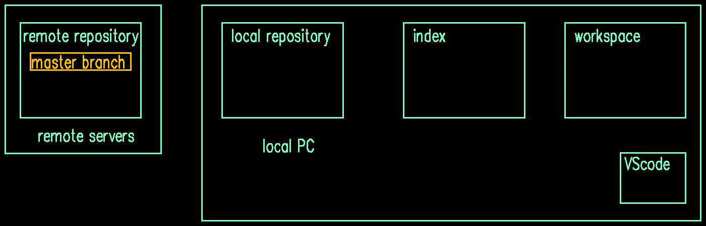
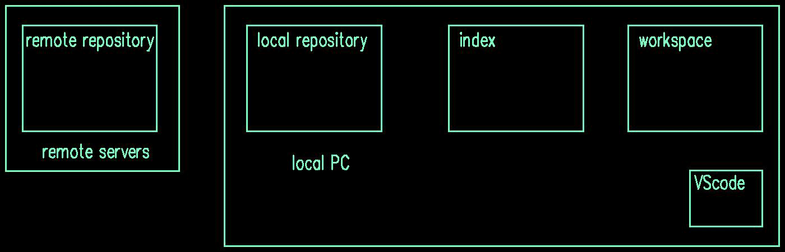
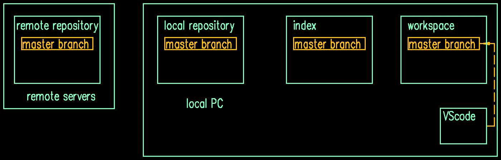
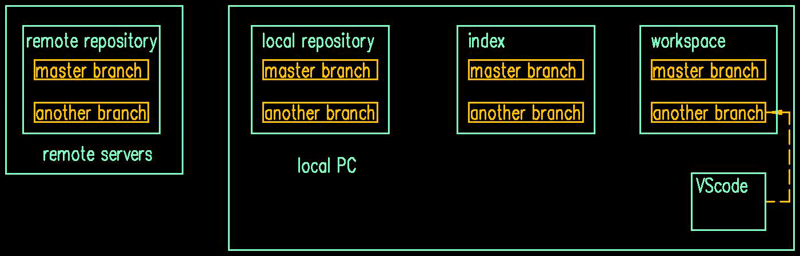
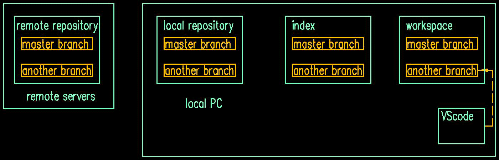

[toc]
1 Installing essential Tools
VScode(*.deb)
2 Creating a repository
2.1 Clone a repository from remote
1.In the VScode, View --> TERMINAL. 2.Enter a directory that we expact to place the repository. 3.copy the repository on github webdite: "code"button --> "SSH" key
git clone [SSH key]
cd [repository folder]

2.2 Pushing a local folder to remote
cd [folder name] #[folder name] dont have to be empty.
git init #init the folder as a local repository.
git add . #add all the files to git
git status #see if the addition is successful
git commit -m "[some message]" -m "[some message]" #the number of message has no limits.
# new repository on website, copy the SSH-key of repository.
git remote add origin [paste the SSH-key] #name the remote repository as origin.
git push -u origin master #push the local repository to network.

3 How to use branch
3.1 new a branch
git branch #check the branch
git checkout -b [branch name] #create a new branch
#do something ,such as modifying a file.
git add .
git commit -m "[some message]"
git push -u origin [current branch name]

3.2 switch branches
before switch to another branch, we should commit first. if we had saved the text, we could see the contents in different branch while switching.
git branch
git checkout [branch name] # "git switch [branch name]" have the same result

3.3 merge branch
git diff master #check the difference of current branch and master branch
git merge master #merge the modify of the master to current branch
#the vscode will show the result of comparison,we edit it and save to current branch.
git add .
git commit -m "[some message]"
git push -u origin [current branch name]

4 Undoing git
4.1 undoing "add"
git add .
git reset #this command can undo the "add" command.
4.2 undoing "commit"
git commit -am "added install step"
git reset HEAD~1 #HEAD~1 means the head will point back one commit further
4.3 undoing multiple "commit"
git log #run this command we can see the hash, copy it
git reset [hash] #paste the hash at the pasition [hash]